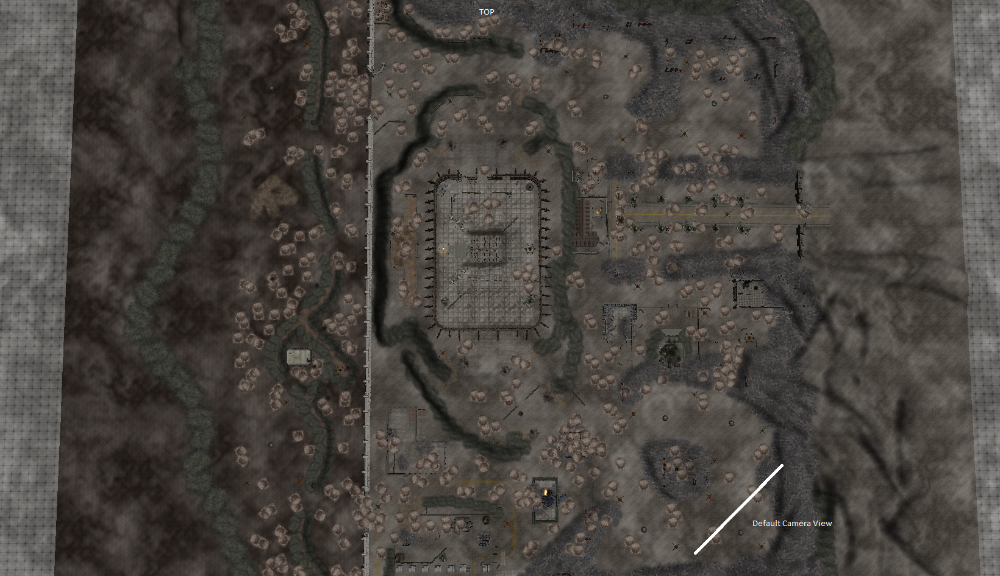
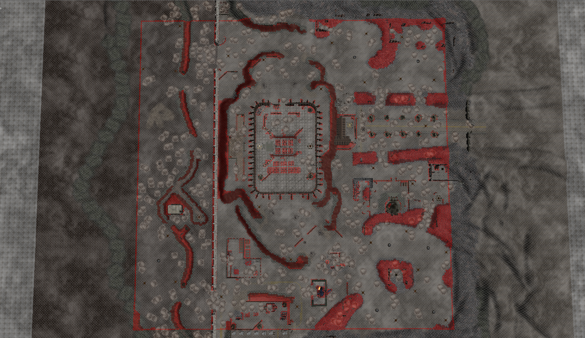
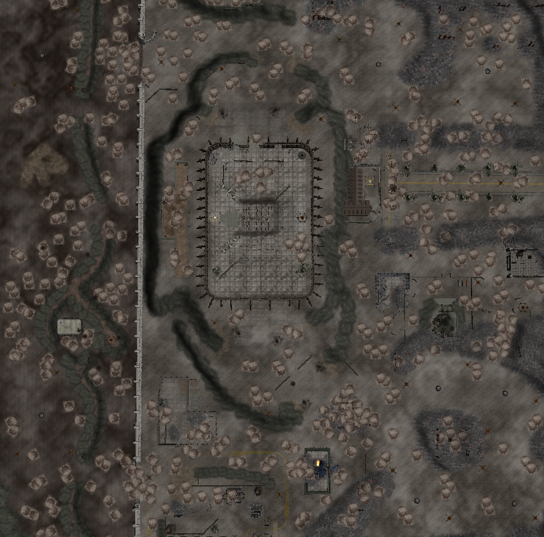
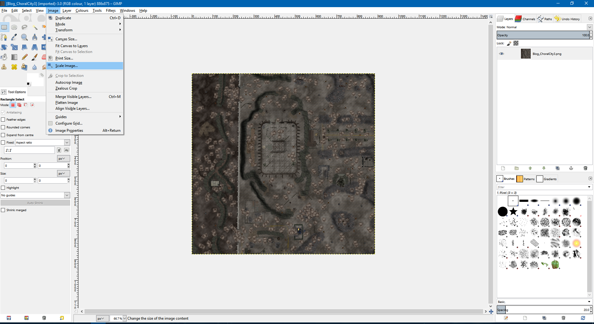
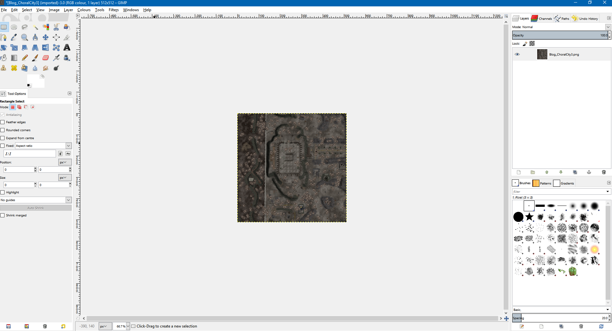
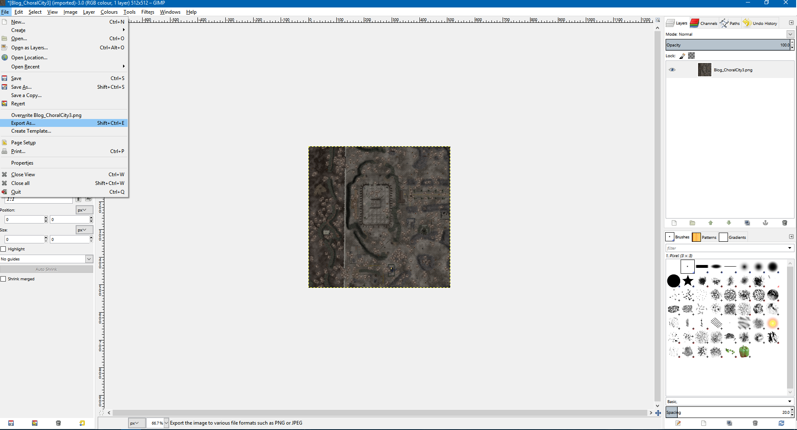
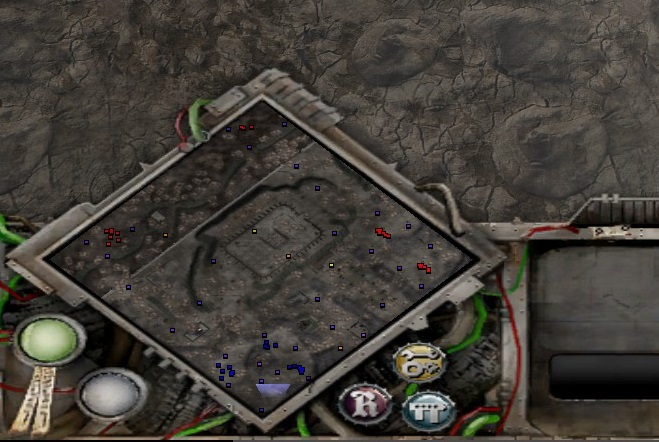
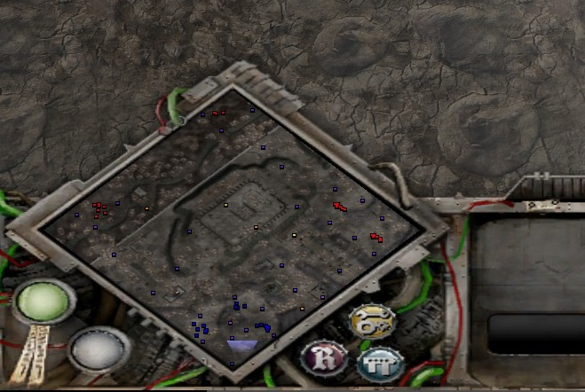

My Tutorials & Blogs

How to make a Custom MiniMap for Dawn of War
Read Time: 5 mins
At the time of writing this, Relic News is down and the Youtube links are gone as well. So I'm making a tutorial for fellow modders on how to make custom minimaps. This tutorial is for people who know how to make maps already.
For this tutorial I'll be using my recently released Choral City map and Gimp 2.
Tools Needed:
- A map made with the Dawn of War Mod tools. A link for the tools can be found here. We are using the Mission Editor tool.
- Gimp 2/Photoshop or any other image editing software that can crop/scale and export .tga files.
- About 300kb to 1MB of space on your hard drive.
Step One:
Open up your map with the Mission Editor and disable the Fog and Sky box (Ctrl F + Ctrl K). Then find the middle of your map and zoom out until your entire playable area of your map is in the window and a little of the outside as well. (See Picture 1)  Image 1
Note: Enabling the Impass Map Editor will help you find your playable area.
 Image 2 Then take a screen shot of this image. I use the Print Screen button. The snipping tool built into Windows 10 would also work.
Step Two:
Open up your image editing software, paste your screenshot onto the canvas and then crop the image as best you can until you only have playable space in the image. I keep the Mission Editor open in another window with the Impass Tool on to help align the playspace.  Image 3
Then save this in an easy to access directory. The name of the file is not currently relevant.
Step Three:
Our next step is to scale the image. For GIMP click on the Image tab and then select Scale Image.  Image 4 This part is important. Dawn Of War maps require two images, an icon for use in the main menu and the minimap. I'll show you how to make both. For the icon, scale the image down 512 x 512. Don't worry about any other settings and confirm your scale.  Image 5 For the minimap, you need to scale the image down to 256 x 256, once again don't worry about any other settings.
Step Four:
Now with your small images, you need to export them as .tga files. For Gimp click on File and then Export As.  Image 6 I recommend setting your export path to your game directory /DXP2/Data/Scenarios/mp.
Now an important thing to note is that these images need to be named the same as your map except for their suffix. So for example in the case of Choral City you will end up with four files:
- ChoralCity.tga (this is the main map file)
- ChoralCity.sgb (this is the second map file)
- ChoralCity_icon.tga (this is the larger 512 x 512 file)
- ChoralCity_mm.tga (this is the smaller 256 x 256 file)
 Image 8
Congratulations you've made an icon and minimap for Dawn of War. If these files are exported to the game folder, you should now be able to see them in game.

Image 9
Image 8
Congratulations you've made an icon and minimap for Dawn of War. If these files are exported to the game folder, you should now be able to see them in game.

Image 9
F.A.Q
-
My minimap is green / my icon is black?
Double check the images are the correct size and their names match the map file.
-
My minimap isn't accurate?
Refer back to Step Two and adjust your cropping then follow the rest of the steps.
-
My minimap is the wrong way round / at the wrong angle?
See Image 1, the top of the map is top right border from the default camera. Adjust it with the initial screenshot or in Gimp rotate the image.
-
How do I do this in Photoshop?
You'll have to find the settings yourself but the method is exactly the same.
-
What about the capture points/relics etc from your last screenshot?
The engine places them onto the minimap, you don't have to do it.
-
Why is Image 7 showing a different file name?
During the creation of that map, the file was called Betrayal_HHH.tga, I renamed it for this tutorial so to not confuse people. I hope it worked!
Thankyou for reading. If you have any questions, please contact me on moddb.